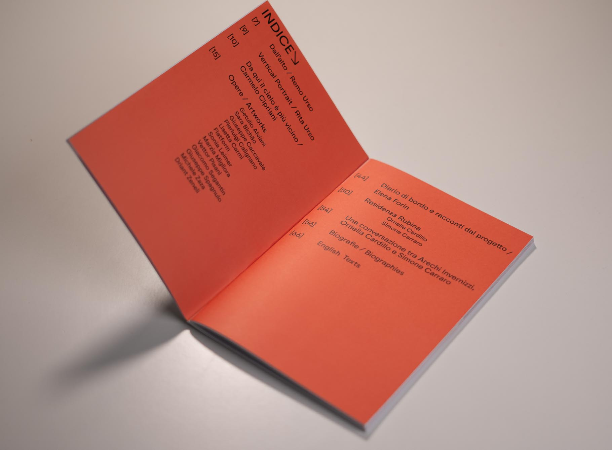
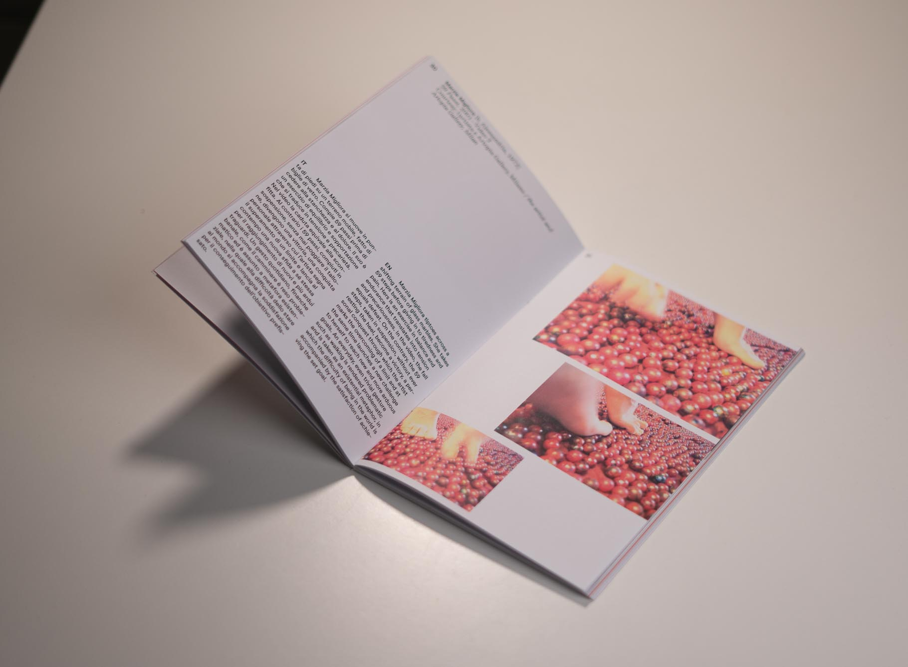

Nucrè catalogue
Editorial design
Nucrè catalogue (2025).
For Nucrè — Il Sogno di Icaro, a contemporary art exhibition held in Ceglie Messapica, I designed the exhibition catalogue for its fourth edition. The publication was conceived as a structured editorial object, able to guide the reader through the works while preserving a light and precise visual identity. The design is based on a balance between strong typographic elements and a clean internal layout. On the cover, the title interacts with large graphic shapes, creating a bold visual gesture that introduces the exhibition’s identity. Inside, the catalogue combines artwork images, captions, and bilingual texts through a grid that gives space to both visual documentation and critical reading. The editorial system was designed to remain clear and functional while giving the publication a recognizable character. Through typography, margins, and image rhythm, the catalogue becomes not only a documentation tool, but also a visual extension of the exhibition.




